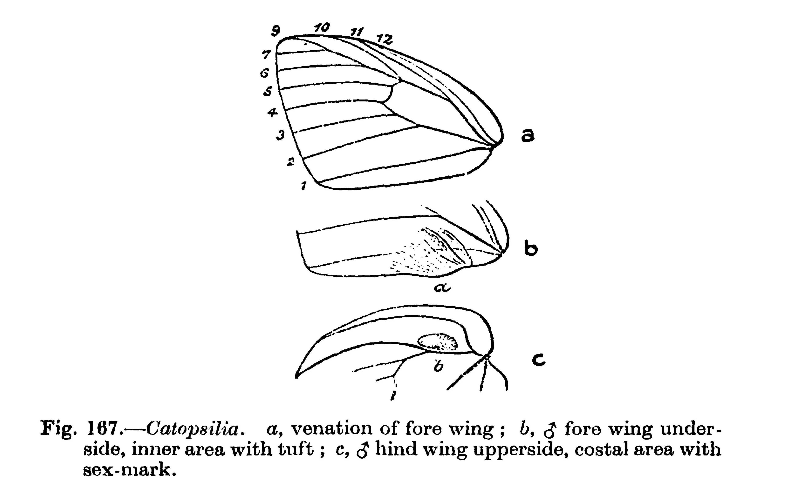

Zoological Survey of India
Governmemt of India
Ministry of Environment,Forest & Climate Change

Governmemt of India
Ministry of Environment,Forest & Climate Change
Full Name: Catopsilia (Hubner)
1. Underside: at all seasons not marked with any transverse reddish-brown strigae... 2.
Underside: at all seasons marked with transverse reddish-brown strigae... 4.
2. Hind wing upperside pale yellow or white... 3.[p. 495]
Hind wing upperside entirely orange... scylla (Linn.)
3. Antennae black. Fore wing upperside below apex with a continuous marginal black line; underside without discal ocelli. with costa black from base to apex ... [p. 490] crocale (Cram.)
Antennae red. Fore wing upperside below apex with a macular marginal black border. Underside of both wings with a small reddish-brown discocellular ocellus. with costa only black near the apex ... [p. 493] pomona (Fabr.)
4. Fore wing upperside below apex with marginal dark border continuous and often broad ... [p. 497] pyranthe (Linn.)
Fore wing upperside below apex with a macular marginal dark border, always narrow, sometimes brown ... [p. 499] florella (Fabr.)
Catopsilia, Hubner, 1819, p. 98; Scudder, 1872, p. 58 (type, crocale Cramer); Moore, 1881 a, p. 121; Bingham, 1902, p. 363 (migration); Manders, 1904 b, pp. 701-6 (migration); Moore, 1907, p. 80; Bingham, 1907, p. 59; Verity, 1909, p. 275; Fruhstorfer, 1910, p. 161; Williams, 1919, pp. 147-53 (migration); Klots, 1929, pp. 203-14, pl. xx (genitalia); id., 1931, p. 177; Evans, 1932 a, pp. 64, 75; Hemming, 1934 a, p. 142 (type, crocale Cramer, 1775); Peile, 1937, p. 58.
Murtia, Hubner, 1819, p. 98; 1934 a, p. 142 (type, minna Herbst).
Type of the genus, C. crocale (Cramer).
. Fore wing elongate; costa regularly and widely arched; apex moderately acute; outer margin short, slightly concave; tornus obtuse; inner margin long, about four-fifths the length of costa; cell less than half the length of wing; vein 11 from the cell well basad; vein 10 from near end of cell; 7+8 and 9 on a long stalk; 6 from the stem of 7+8 and 9 at about a third from end of cell to apex; 5 from the cell, with mdc oblique and at least half as long as ldc. Hind wing very broad; costa strongly arched; apexnot well marked; outer margin very slightly arched; tornus angular, well marked; inner margin almost straight from base, slightly concave near apex; cell short and broad; mdc and ldc slightly oblique, the latter attenuate in its upper half; precostal vein short, curved slightly basad; vein 8 strongly angular near base. Antenn{\ae} short and stout, not half length of fore wing; club long and gradual, truncate at apex. Palpus with third segment short and oval
Male with secondary sexual characters. Fore wing underside, near base of inner margin, with a long hair-pencil directed forwards; hind wing upperside, in area 7 near the base, with an oval patch of androconia.
Genitalia.—Penis long and curved, bearing chitinized teeth, and with a long basal prong; saccus thick, shorter than the tegumen and uncus combined; tegumen short, usually with a mid-dorsal lobe; uncus slender, free part long; valve with a rounded dorsal process, and an angulate, somewhat rounded distal process (from Klots, 1931). The genus agrees with Colias in the long basal prong of the penis, the short saccus, and the dorsal lobe of the tegumen.
Habits.—The species are very common and sometimes congregate in swarms. Migratory flights often take place, and 75 per cent. of the individuals are males, but the females often lay eggs during migration. Both sexes are easily caught at flower, where they settle to rest the wings closed; they are also partial to wet places. The larv{\ae} are sometimes in such numbers as to constitute a pest.
Distribution.—The whole Indo-Australian Region and Africa; allied groups are found in South America. Five species are found in the Indian area.
© 2016 Zoological Survey of India. All rights reserved